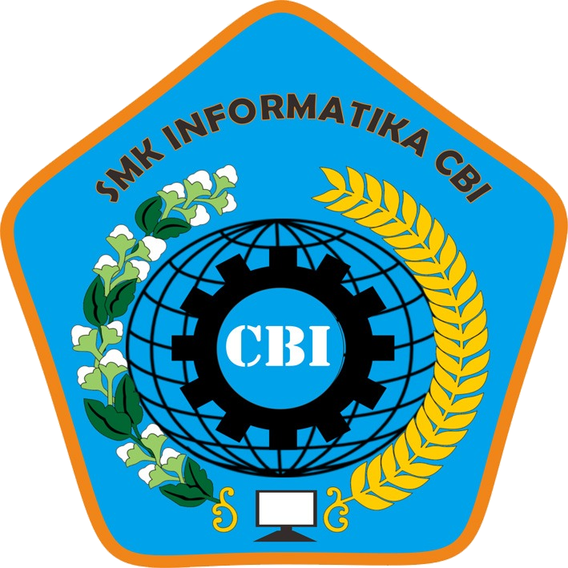

Profil SMK Informatika CBI
VISI SMK INFORMATIKA CBI
"Menyiapkan tenaga ahli bidang teknologi informasi(TI) yang siap kerja,cerdas, kompetitif dan berakhlak
mulia".
A. TUJUAN SMK INFORMATIKA CBI
Sebagai bagian dari sistem pendidikan menengah,secara umum sekolah menengah kejuruan bertujuan:
- 1.Menyiapkan peserta didik agar dapat menjalani kehidupan secara layak.
- 2.Meningkatkan keimanan&ketaqwaan peserta didik.
- 3.Menyiapkan peserta didik agar menjadi warga negara yang mandiri dan bertanggung jawab.
- 4.Menyiapkan peserta didik agar memahami dan menghargai keanekaragaman budaya bangsa indonesia.
- 5.Menyiapkan peserta didik agar dapat menerapkan dan memelihara hidup sehat, pengetahuan dan seni.
B. TUJUAN KHUSUS
Secara khusus SMK INFORMATIKA CBI bertujuan:
- 1.Menyiapkan peserta didik agar dapat bekerja, baik secara mandiri atau mengisi lowongan pekerjaan yang
ada
didunia usaha dan dunia industri sebagai tenaga kerja tingkat menengah, sesuai dengan bidang dan program
keahlian yang diminati.
- 2.Membekali peserta didik agar mampu memmiliki karir, ulet dan gigih dalam berkompetensi dan mampu
mengembangkan sikap profesional dalam bidang keahlian yang diminati.
- 3.Membekali peserta didik dengan ilmu pengetahuan dan teknologi, agar mampu mengembangkan diri melalui
jenjang pendidikan yang tinggi.
MISI SMK INFORMATIKA CBI
- -Mengembangkan peserta didik dalam aspek kognisi (nalar-keilmuan), psikomotorik (teknis-keterampilan),
afeksi (sikap)
- -Mengeksplorasi berbagai macam keahlian bidang TI yang berkembang dan dibutuhkan pasar berikut merancang
isi, referensi dan metode pembelajarannya.
- -Meningkatkan kualitas kelulusan dalam bidang ilmu pengetahuan, teknologi, seni dan budaya yang
berorientasi pada kecakapan hidup.
- -Mengoptimalkan pengembangan diri dalam hal minat dan bakat melalui program bimbingan konseling dan
ekstrakulikuler